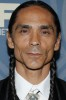

País:Canadá, 93 minutos.
Idiomas:Inglés
GénerosSuspenso, Acción, Policial
Director/es:Robin Pront
Guionistas:Micah Ranum
Códec de vídeo:Unknown
Número: 38


Certificación:R
Argumento:
Un cazador retirado que vive aislado en una reserva natural se ve envuelto en un mortal juego del gato y el ratón cuando él y el sheriff local se disponen a seguir la pista de un sanguinario asesino que podría haber secuestrado a su hija años atrás.
Reparto 

Medio: Archivo de video,
Localización: D:\Multimedia\Películas\Cazador de Silencio (2020)\Cazador de Silencio (2020).mkv
Prestado: No
Rel. aspecto: Unknown